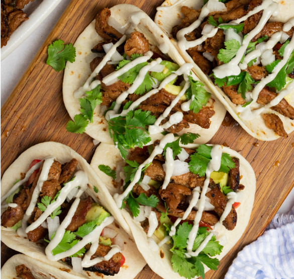

Vegan Carne Asasa (Soy Curls)

Vegan Soy Curl Carne Asada. A great way to use soy curls
We made this recipe for a vegetarian potluck with friends.
Preparing this with pico de gallo and rice and beans made for a great potluck dish
Ingredients
Carne Asada
- Better than Bouillon "No Beef Base"
- 4 tbsp fresh squeezed lime juice
- 1/2 cup orange juice
- 1 tbsp white or apple cider vinegar
- 4-6 cloves of garlic, minced
- 2 small jalapenos, minced
- 1 tsp ground cumin
- 1/2 tsp fresh cracked black pepper
- 1 tsp sea salt
- 1 8 oz bag of Butler Soy Curls
Pico de Gallo
- 1 tomato, diced
- 1 onion, diced
- 1/2 small jalapeno, minced
- 1 handful of cilantro, chopped
For Serving
- Lime wedges
- small corn tortillas
- 2 avocados, diced
- fresh cilantro
- chipotle or avocado mayo
Steps
- Combine "Better than Bouillon" base to create broth
- Make marinade by combining broth with vinegar, citrus juices, garlic, jalapeno,
cumin, salt, and pepper. Whisking until spices are dissolved
- Rehydrate the soy curls in the marinade, letting sit for at least 10-15 minutes.
If prefered, longer is ok
- Heat a nonstick pan over medium-high heat.
Squeeze excess broth from soy curls one handful at a time and place them in skillet.
DO NOT pour out excess marinade
- Cook for 3-5 minutes until lightly browned. Drizzle some olive oil over soy curls.
- 1/4 cup at a time, add remaining marinade to skillet.
Stir each time marinade is added, and let cook for 8-12 minutes, stirring every 1-2.
(Marinade should be absorbed back into soy curls and also boiling off).
- While soy curls are cooking, begin to warm corn tortillas on a separate skillet with a litte oil.
- Once nicely browned, chewy, and firm, they're ready to serve!
Make sure the marinade is absorbed or boiled off, remove from heat, and top with fresh lime juice, sea salt, and pepper.